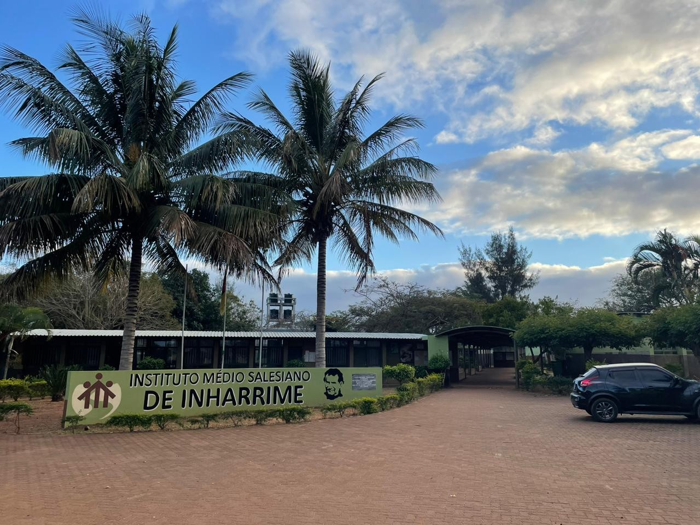
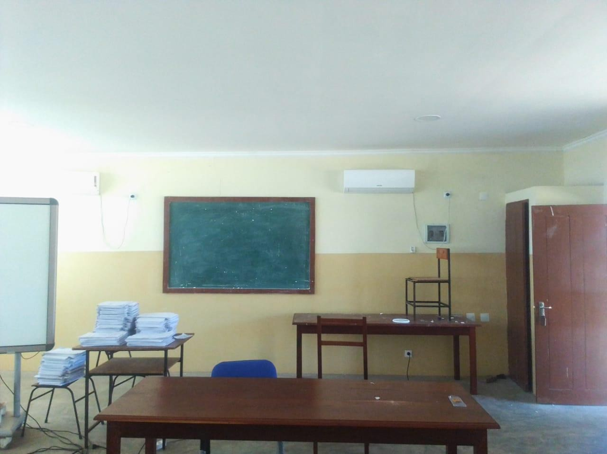
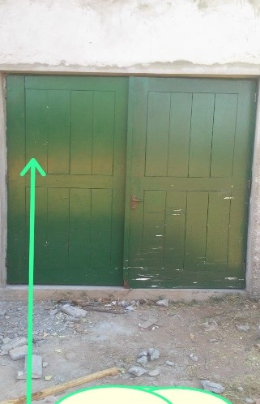

Desde estruturas robustas a isolamentos térmicos avançados e impermeabilizações de alta performance. Entregamos obras de engenharia de elite que desafiam o tempo em Moçambique.
Projetos desenvolvidos por engenheiros qualificados.
Isolamentos que reduzem até 8°C a temperatura interna.
Impermeabilizações reflexivas com durabilidade extrema.

Obra de referência realizada com orgulho pela MAPE.
Nascida com a missão de transformar o cenário da construção civil em Moçambique, a **MAPE Construções** especializou-se em combinar a solidez das obras estruturais com a tecnologia de proteção predial de ponta.
Não somos apenas empreiteiros; somos solucionadores de problemas. Se a sua empresa sofre com coberturas industriais quentes, infiltrações recorrentes de água das chuvas ou necessita de remodelações com acabamentos meticulosos de teto falso e carpintaria, a MAPE entrega a solução definitiva.
Zero surpresas orçamentais. Orçamentos detalhados e rigorosos.
Técnicos altamente qualificados em isolamento e engenharia estrutural.
Serviços premium projetados para conferir durabilidade, conforto e valorização patrimonial ao seu imóvel.
Execução de fundações robustas, estruturas de betão armado e alvenaria de alta resistência. Edificações residenciais, comerciais e industriais erguidas com o máximo rigor técnico.
Aplicação de subcoberturas isolantes aluminizadas de alto padrão em hangares, escolas, indústrias e residências. Reduza significativamente a radiação térmica e os custos de climatização.
Eliminação total e duradoura de infiltrações de água. Proteção de lajes expostas, calhas e telhados através de membranas acrílicas elásticas e revestimento refletor prateado avançado.
Design de interiores executado com perfeição. Montagem de sancas de gesso decorativas, tetos falsos modernos, aplicação de gesso cartonado (Drywall), carpintaria fina e pintura profissional.
Garantimos transparência absoluta e zero dores de cabeça do primeiro contacto até à entrega das chaves.
Realizamos um levantamento minucioso no local para analisar a estrutura, detetar infiltrações ou avaliar necessidades geométricas.
Apresentamos uma estimativa detalhada sem custos ocultos ou alterações arbitrárias. Previsibilidade total para o seu planeamento financeiro.
Nossos técnicos especializados erguem a obra sob a orientação constante de um engenheiro civil sénior, garantindo normas de topo.
Entrega da obra limpa, inspecionada e validada. Fornecemos garantia técnica plurianual de estanqueidade e durabilidade de materiais.
Arraste o cursor central para comparar a qualidade dos nossos serviços antes da intervenção e após a conclusão da MAPE Construções.
Explore fotografias reais das nossas intervenções em Moçambique, divididas pelas principais áreas técnicas.
Reabilitação e melhoramento da infraestrutura de referência de Inharrime.

Fase estrutural crítica de preparação de placa de betão armado.

Trabalho técnico de levantamento de alvenarias de elevada precisão geométrica.

Instalação de barreiras térmicas aluminizadas para bloqueio total de radiação solar.

Montagem de teto decorativo e sancas integradas no Instituto Salesiano.

Reabilitação e pintura de portas de madeira maciça de alta durabilidade.
Experimente o nosso simulador interativo de diagnóstico preliminar de patologias em obras. Selecione um cenário de exemplo ou envie a sua própria foto para ver a nossa IA em ação!
Escolha uma imagem de exemplo técnico abaixo ou carregue uma fotografia para iniciar o scanner.
Selecione um cenário acima ou envie uma fotografia para ver a imagem aqui
Carregue uma imagem ou clique em um dos cenários técnicos na Estação de Diagnóstico para ativar os canais de processamento digital.
A MAPE Construções executa projetos com elevado padrão técnico. Para garantir a máxima atenção e qualidade de execução, **aceitamos um número limitado de projetos corporativos e residenciais por mês**.
O seu projeto será revisto pelo nosso engenheiro-chefe, não por assistentes comerciais.
O simulador previne 95% dos desvios de orçamento comuns no mercado moçambicano.
Selecione a categoria que melhor representa as suas necessidades atuais.
Selecione uma faixa para podermos desenhar a proposta dentro das especificações corretas.
A nossa equipa agenda obras sob reserva antecipada para manter o nível de excelência técnico.
Executamos obras em províncias e distritos selecionados em Moçambique.
Se o seu projeto passar no crivo de viabilidade de agenda, o nosso Engenheiro-Chefe contactará por WhatsApp ou Telemóvel.
"Tínhamos um problema crítico de radiação térmica e goteiras nas salas de aula do nosso Instituto Médio Salesiano. A MAPE Construções resolveu tudo com um isolamento térmico impecável e acabamento de sancas que transformaram as salas de aula num ambiente de estudo de elite. Recomendo fortemente o rigor técnico deles."